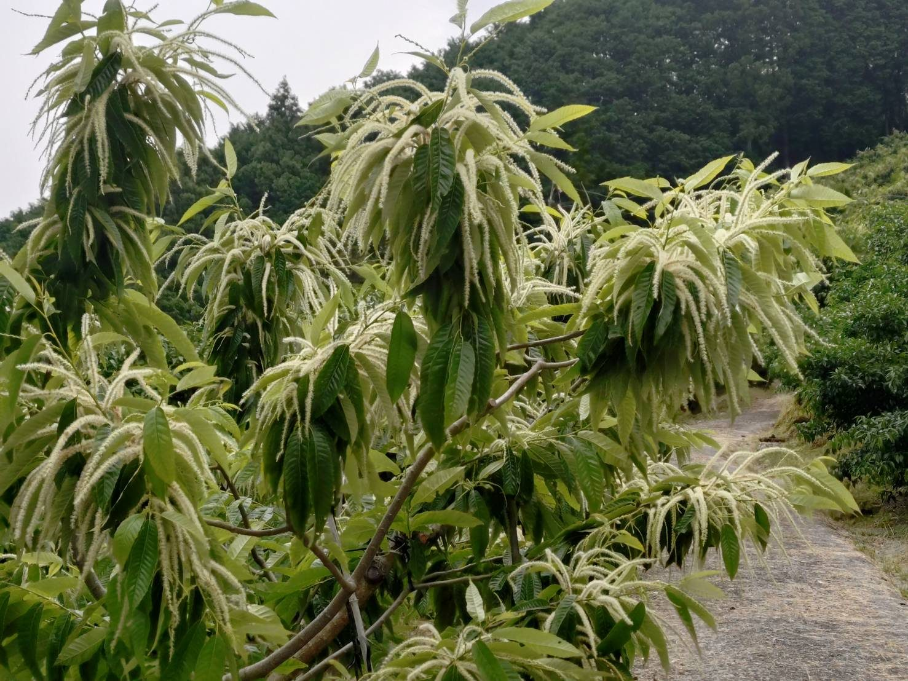
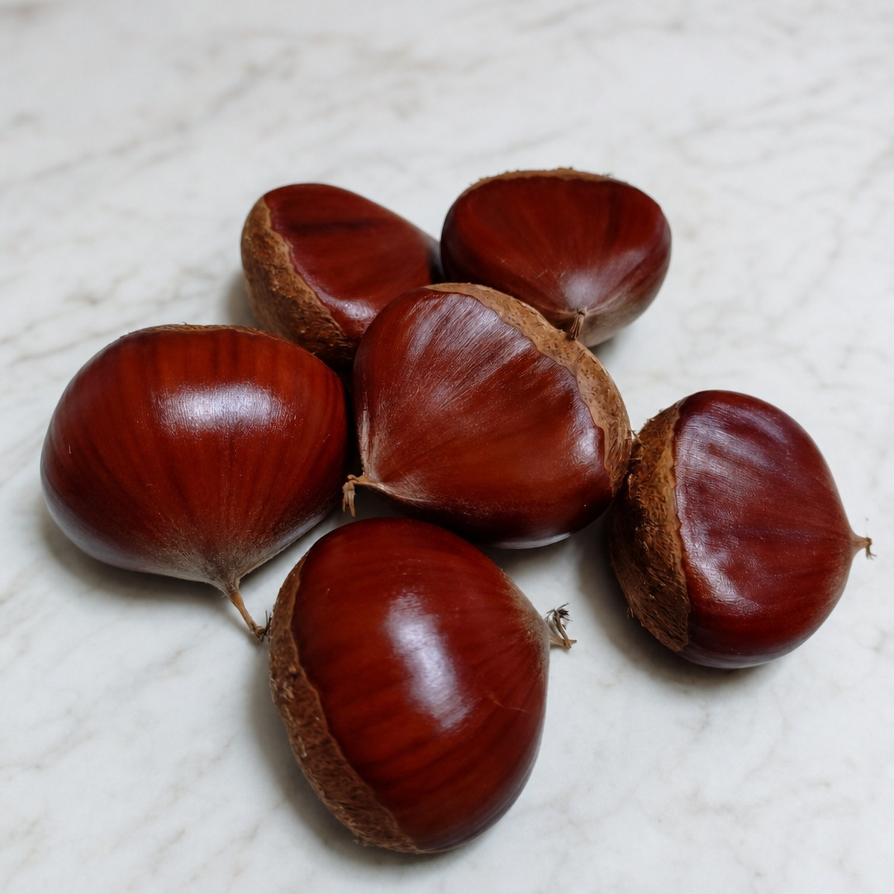
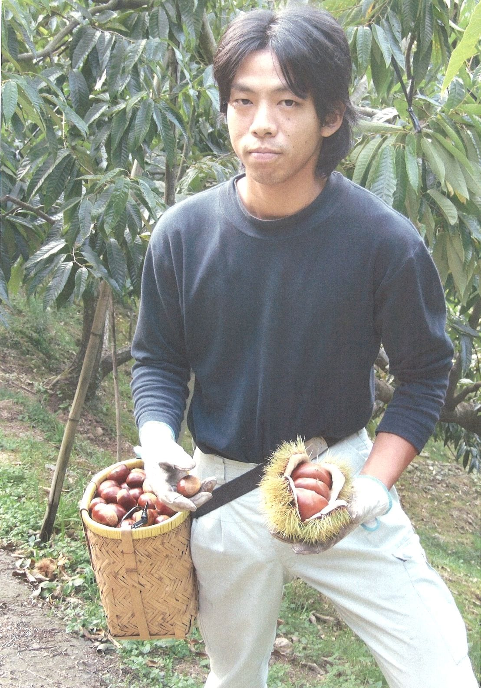

幻の品種「K2(改)俗称」
栽培の難しさから品種登録されることなく、ついに市場へ出回ることのなかった幻の栗。その系統を愛媛で唯一守り続けてきたのが、私たちです。三代目がさらに改良を加えて大粒に実らせた、その軌跡をご紹介します。
「ついに世に出ることのなかった幻の品種を、この地で確かに実らせ、お届けしたい」
「K1」から「K2俗称」へ、幻のままに
かつて愛媛で、試験的に育てられた「K1」という栗があり、その改良として「K2俗称」、またの名を「しんきち」と呼ばれる栗が生まれました。しかし、その木はあまりに繊細で枯れやすく、栽培がきわめて難しいという性質を持っていました。ほかに作り手が現れることはなく、品種登録もされないまま、K2俗称は市場に出回ることのない「幻の栗」として、ほとんど世に知られないままだったのです。
唯一、残し続けた系統
しかし、その類いまれな大玉の育ちと、濃厚な甘み・粘り気というポテンシャルを信じ、愛媛でただ一軒、その系統を絶やすことなくひっそりと残し、栽培し続けてきたのが私たちです。栽培が極めて難しいからこそ、土壌の改良や緻密な剪定、自家での接ぎ木技術を何年も積み重ね、毎年の収穫へと繋いできました。

三代目の手で実を結ぶ「K2(改)俗称」
この受け継がれた貴重な系統をもとに、私がさらに独自の改良と工夫を施し、現代の栽培技術と徹底した管理によって大粒に実らせたのが「K2(改)俗称」です。「K2は実が少ない」という品種の定説を覆すかのように、大粒の実をたわわにつける姿は圧巻です。生命力あふれる土が、このデリケートな品種の秘めた可能性を、あますことなく引き出してくれました。

唯一の系統を、絶やさずに
秋になり、大きく実ったイガを慎重に割ると、中から見事な艶を放つ大玉の栗が姿を現します。ついに市場へ出ることのなかった系統を、愛媛でただ一軒だけ守り育て、世代を更新してきた果てしない歳月。その地道な手仕事の積み重ねこそが、現在の「K2(改)俗称」の確かな品質を形作っています。
味わいと、使い方
最大の特徴は、手にした時に驚くほどずっしりとした重みを感じる大玉サイズと、他の品種にはない粘り気のある濃厚な果肉です。加熱しても崩れにくい極上の質感を持っているため、マロングラッセや栗チップスなどの洋菓子・和菓子に加工しても風味を損なわず、素材本来の芳醇な香りと甘みが贅沢に際立ちます。もちろん、ご家庭でシンプルに炊き上げる栗ご飯も格別の仕上がりになります。
- 粘質でほっくりとした極上の歯ごたえ。加工を施しても型崩れしにくい果肉です
- 上品な甘みと香りが強く、マロングラッセ・栗チップス・栗ご飯のいずれにも好適
- 手のひらを覆うほどの大玉サイズ。むき栗に仕上げても圧倒的な食べ応えがあります